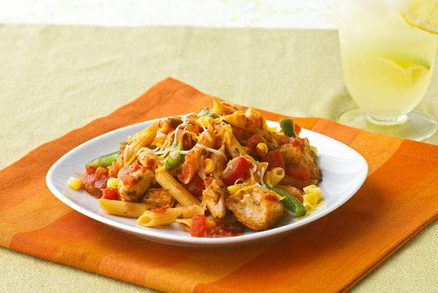
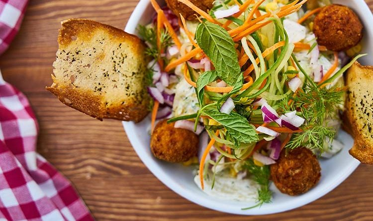
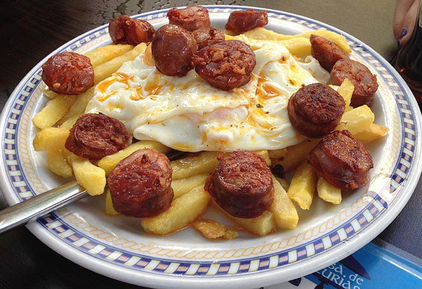
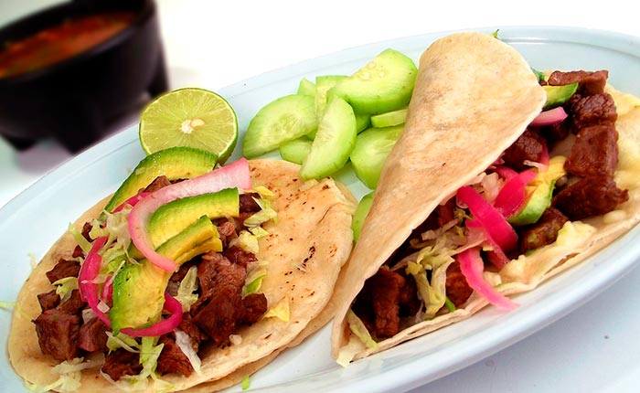
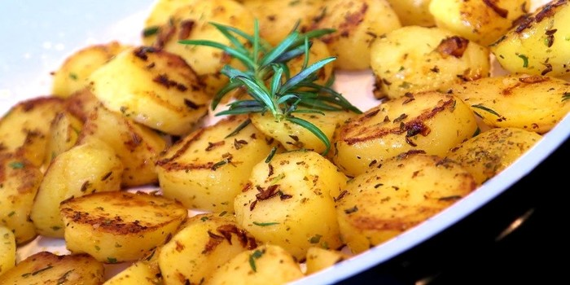
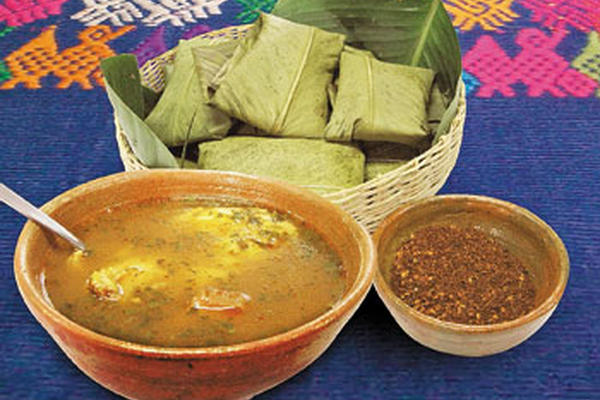
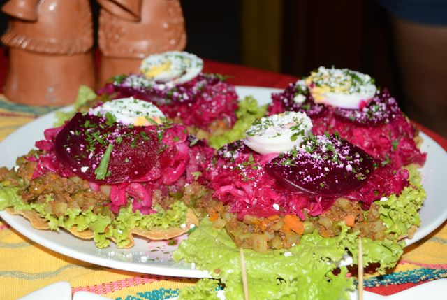

Gastronomía
"Una receta por sí misma no tiene alma, es tu trabajo dársela"
Búsqueda
Favoritos






Historial
Kak ik

Un platillo propio de la región q'eqchi', este caldo es uno de los favoritos por su carne de "chunto" (chompipe), diferentes verduras, especies y chile, bastante chile. Arroz para acompañar, "pochitos" (tamalitos de manteca) y cacao o pinol para beber. Una delicia.
Enchiladas

Tostadas con carne picada, queso, un toque de huevo, salsa, queso y remolacha para ese color característico. Un reto comerla sin quebrar la tostada, pero con un sabor maravilloso para el intento.